In this notebook, we normalized each model feature by country to correct country-specific feature quirks, as well as the wealth index.
This method has been done in a similar study using DHS as training data and was also documented here.
Models recover how relative values of input data (relative to other locations in that country) correlate with relative values of wealth (also relative to other locations in that country).
The current best model setup involves (1) normalizing all features per country using MinMaxScaler and (2) scaling the wealth index per country using StandardScaler
/home/jace/workspace/unicef-ai4d-poverty-mapping/env/lib/python3.9/site-packages/geopandas/_compat.py:111: UserWarning: The Shapely GEOS version (3.11.1-CAPI-1.17.1) is incompatible with the GEOS version PyGEOS was compiled with (3.10.1-CAPI-1.16.0). Conversions between both will be slow.
warnings.warn(
/home/jace/workspace/unicef-ai4d-poverty-mapping/env/lib/python3.9/site-packages/tqdm/auto.py:22: TqdmWarning: IProgress not found. Please update jupyter and ipywidgets. See https://ipywidgets.readthedocs.io/en/stable/user_install.html
from .autonotebook import tqdm as notebook_tqdm
%reload_ext autoreload%autoreload 2
Set up Data Access
# # Instantiate data managers for Ookla and OSM# # This auto-caches requested data in RAM, so next fetches of the data are faster.osm_data_manager = OsmDataManager(cache_dir=settings.ROOT_DIR/"data/data_cache")ookla_data_manager = OoklaDataManager(cache_dir=settings.ROOT_DIR/"data/data_cache")
# Log-in using EOG credentialsusername = os.environ.get('EOG_USER',None)username = username if username isnotNoneelseinput('Username?')password = os.environ.get('EOG_PASSWORD',None)password = password if password isnotNoneelse getpass.getpass('Password?') # set save_token to True so that access token gets stored in ~/.eog_creds/eog_access_tokenaccess_token = nightlights.get_eog_access_token(username,password, save_token=True)
2023-03-01 12:43:31.340 | INFO | povertymapping.nightlights:get_eog_access_token:48 - Saving access_token to ~/.eog_creds/eog_access_token
2023-03-01 12:43:31.344 | INFO | povertymapping.nightlights:get_eog_access_token:56 - Adding access token to environmentt var EOG_ACCESS_TOKEN
This section creates countries_data (pd.DataFrame) which combines DHS/Ookla/OSM/VIIRS data for all specified countries.
%%time# Create list of dataframes per country, and list of all columns appearing in DHS columnscountry_data_list = []dhs_columns = ['DHSCLUST']for country, config in country_config.items():print(f'Loading data for {country}')# Load the DHS cluster data dhs_household_dta_path = config['dhs_household_dta_path'] dhs_geographic_shp_path = config['dhs_geographic_shp_path'] country_code = config['country_code'] dhs_gdf = generate_dhs_cluster_level_data( dhs_household_dta_path, dhs_geographic_shp_path, col_rename_config=country_code, convert_geoms_to_bbox=True, bbox_size_km =2.4 ).reset_index(drop=True) dhs_columns =list(set(dhs_columns +list(dhs_gdf.columns)))# Generate base features for the dhs dataframe country_data = dhs_gdf.copy() country_osm = config['country_osm'] ookla_year = config['ookla_year'] nightlights_year = config['nightlights_year']# Add in OSM features country_data = osm.add_osm_poi_features(country_data, country_osm, osm_data_manager) country_data = osm.add_osm_road_features(country_data, country_osm, osm_data_manager)# Add in Ookla features country_data = ookla.add_ookla_features(country_data, 'fixed', ookla_year, ookla_data_manager) country_data = ookla.add_ookla_features(country_data, 'mobile', ookla_year, ookla_data_manager)# Add in the nighttime lights features country_data = nightlights.generate_nightlights_feature(country_data, nightlights_year) country_data_list.append(country_data)# Combine all country data into a single dataframecountries_data = gpd.GeoDataFrame(pd.concat(country_data_list,ignore_index=True), crs=country_data_list[0].crs)
Loading data for Philippines
2023-03-01 12:44:30.214 | INFO | povertymapping.osm:download_osm_country_data:187 - OSM Data: Cached data available for philippines at /home/jace/workspace/unicef-ai4d-poverty-mapping/notebooks/2023-02-15-dhs-corss-country-classfier-experiments/../../data/data_cache/osm/philippines? True
2023-03-01 12:44:30.215 | DEBUG | povertymapping.osm:load_pois:149 - OSM POIs for philippines being loaded from /home/jace/workspace/unicef-ai4d-poverty-mapping/notebooks/2023-02-15-dhs-corss-country-classfier-experiments/../../data/data_cache/osm/philippines/gis_osm_pois_free_1.shp
2023-03-01 12:44:38.110 | INFO | povertymapping.osm:download_osm_country_data:187 - OSM Data: Cached data available for philippines at /home/jace/workspace/unicef-ai4d-poverty-mapping/notebooks/2023-02-15-dhs-corss-country-classfier-experiments/../../data/data_cache/osm/philippines? True
2023-03-01 12:44:38.111 | DEBUG | povertymapping.osm:load_roads:168 - OSM Roads for philippines being loaded from /home/jace/workspace/unicef-ai4d-poverty-mapping/notebooks/2023-02-15-dhs-corss-country-classfier-experiments/../../data/data_cache/osm/philippines/gis_osm_roads_free_1.shp
2023-03-01 12:45:49.999 | DEBUG | povertymapping.ookla:load_type_year_data:68 - Contents of data cache: []
2023-03-01 12:45:50.000 | INFO | povertymapping.ookla:load_type_year_data:83 - Cached data available at /home/jace/workspace/unicef-ai4d-poverty-mapping/notebooks/2023-02-15-dhs-corss-country-classfier-experiments/../../data/data_cache/ookla/processed/2f858b388182d50703550c8ef9d321df.csv? True
2023-03-01 12:45:50.001 | DEBUG | povertymapping.ookla:load_type_year_data:88 - Processed Ookla data for aoi, fixed 2019 (key: 2f858b388182d50703550c8ef9d321df) found in filesystem. Loading in cache.
2023-03-01 12:45:50.487 | DEBUG | povertymapping.ookla:load_type_year_data:68 - Contents of data cache: ['2f858b388182d50703550c8ef9d321df']
2023-03-01 12:45:50.489 | INFO | povertymapping.ookla:load_type_year_data:83 - Cached data available at /home/jace/workspace/unicef-ai4d-poverty-mapping/notebooks/2023-02-15-dhs-corss-country-classfier-experiments/../../data/data_cache/ookla/processed/5a45dc45080a935951e6c2b6c0052b13.csv? True
2023-03-01 12:45:50.489 | DEBUG | povertymapping.ookla:load_type_year_data:88 - Processed Ookla data for aoi, mobile 2019 (key: 5a45dc45080a935951e6c2b6c0052b13) found in filesystem. Loading in cache.
2023-03-01 12:45:51.035 | INFO | povertymapping.nightlights:get_clipped_raster:414 - Retrieving clipped raster file /home/jace/.geowrangler/nightlights/clip/295bf47ce6753c7f06ab79012b769f2a.tif
Loading data for Timor Leste
2023-03-01 12:46:04.071 | INFO | povertymapping.osm:download_osm_country_data:187 - OSM Data: Cached data available for east-timor at /home/jace/workspace/unicef-ai4d-poverty-mapping/notebooks/2023-02-15-dhs-corss-country-classfier-experiments/../../data/data_cache/osm/east-timor? True
2023-03-01 12:46:04.072 | DEBUG | povertymapping.osm:load_pois:149 - OSM POIs for east-timor being loaded from /home/jace/workspace/unicef-ai4d-poverty-mapping/notebooks/2023-02-15-dhs-corss-country-classfier-experiments/../../data/data_cache/osm/east-timor/gis_osm_pois_free_1.shp
2023-03-01 12:46:05.380 | INFO | povertymapping.osm:download_osm_country_data:187 - OSM Data: Cached data available for east-timor at /home/jace/workspace/unicef-ai4d-poverty-mapping/notebooks/2023-02-15-dhs-corss-country-classfier-experiments/../../data/data_cache/osm/east-timor? True
2023-03-01 12:46:05.380 | DEBUG | povertymapping.osm:load_roads:168 - OSM Roads for east-timor being loaded from /home/jace/workspace/unicef-ai4d-poverty-mapping/notebooks/2023-02-15-dhs-corss-country-classfier-experiments/../../data/data_cache/osm/east-timor/gis_osm_roads_free_1.shp
2023-03-01 12:46:06.131 | DEBUG | povertymapping.ookla:load_type_year_data:68 - Contents of data cache: ['2f858b388182d50703550c8ef9d321df', '5a45dc45080a935951e6c2b6c0052b13']
2023-03-01 12:46:06.133 | INFO | povertymapping.ookla:load_type_year_data:83 - Cached data available at /home/jace/workspace/unicef-ai4d-poverty-mapping/notebooks/2023-02-15-dhs-corss-country-classfier-experiments/../../data/data_cache/ookla/processed/206a0323fa0e80f82339b66d0c859b4a.csv? True
2023-03-01 12:46:06.133 | DEBUG | povertymapping.ookla:load_type_year_data:88 - Processed Ookla data for aoi, fixed 2019 (key: 206a0323fa0e80f82339b66d0c859b4a) found in filesystem. Loading in cache.
2023-03-01 12:46:06.248 | DEBUG | povertymapping.ookla:load_type_year_data:68 - Contents of data cache: ['2f858b388182d50703550c8ef9d321df', '5a45dc45080a935951e6c2b6c0052b13', '206a0323fa0e80f82339b66d0c859b4a']
2023-03-01 12:46:06.249 | INFO | povertymapping.ookla:load_type_year_data:83 - Cached data available at /home/jace/workspace/unicef-ai4d-poverty-mapping/notebooks/2023-02-15-dhs-corss-country-classfier-experiments/../../data/data_cache/ookla/processed/209c2544788b8e2bdf4db4685c50e26d.csv? True
2023-03-01 12:46:06.250 | DEBUG | povertymapping.ookla:load_type_year_data:88 - Processed Ookla data for aoi, mobile 2019 (key: 209c2544788b8e2bdf4db4685c50e26d) found in filesystem. Loading in cache.
2023-03-01 12:46:06.381 | INFO | povertymapping.nightlights:get_clipped_raster:414 - Retrieving clipped raster file /home/jace/.geowrangler/nightlights/clip/b0d0551dd5a67c8eada595334f2655ed.tif
Loading data for Cambodia
2023-03-01 12:46:11.471 | INFO | povertymapping.osm:download_osm_country_data:187 - OSM Data: Cached data available for cambodia at /home/jace/workspace/unicef-ai4d-poverty-mapping/notebooks/2023-02-15-dhs-corss-country-classfier-experiments/../../data/data_cache/osm/cambodia? True
2023-03-01 12:46:11.473 | DEBUG | povertymapping.osm:load_pois:149 - OSM POIs for cambodia being loaded from /home/jace/workspace/unicef-ai4d-poverty-mapping/notebooks/2023-02-15-dhs-corss-country-classfier-experiments/../../data/data_cache/osm/cambodia/gis_osm_pois_free_1.shp
2023-03-01 12:46:13.594 | INFO | povertymapping.osm:download_osm_country_data:187 - OSM Data: Cached data available for cambodia at /home/jace/workspace/unicef-ai4d-poverty-mapping/notebooks/2023-02-15-dhs-corss-country-classfier-experiments/../../data/data_cache/osm/cambodia? True
2023-03-01 12:46:13.595 | DEBUG | povertymapping.osm:load_roads:168 - OSM Roads for cambodia being loaded from /home/jace/workspace/unicef-ai4d-poverty-mapping/notebooks/2023-02-15-dhs-corss-country-classfier-experiments/../../data/data_cache/osm/cambodia/gis_osm_roads_free_1.shp
2023-03-01 12:46:21.357 | DEBUG | povertymapping.ookla:load_type_year_data:68 - Contents of data cache: ['2f858b388182d50703550c8ef9d321df', '5a45dc45080a935951e6c2b6c0052b13', '206a0323fa0e80f82339b66d0c859b4a', '209c2544788b8e2bdf4db4685c50e26d']
2023-03-01 12:46:21.358 | INFO | povertymapping.ookla:load_type_year_data:83 - Cached data available at /home/jace/workspace/unicef-ai4d-poverty-mapping/notebooks/2023-02-15-dhs-corss-country-classfier-experiments/../../data/data_cache/ookla/processed/37f570ebc130cb44f9dba877fbda74e2.csv? True
2023-03-01 12:46:21.358 | DEBUG | povertymapping.ookla:load_type_year_data:88 - Processed Ookla data for aoi, fixed 2019 (key: 37f570ebc130cb44f9dba877fbda74e2) found in filesystem. Loading in cache.
2023-03-01 12:46:21.568 | DEBUG | povertymapping.ookla:load_type_year_data:68 - Contents of data cache: ['2f858b388182d50703550c8ef9d321df', '5a45dc45080a935951e6c2b6c0052b13', '206a0323fa0e80f82339b66d0c859b4a', '209c2544788b8e2bdf4db4685c50e26d', '37f570ebc130cb44f9dba877fbda74e2']
2023-03-01 12:46:21.571 | INFO | povertymapping.ookla:load_type_year_data:83 - Cached data available at /home/jace/workspace/unicef-ai4d-poverty-mapping/notebooks/2023-02-15-dhs-corss-country-classfier-experiments/../../data/data_cache/ookla/processed/1128a917060f7bb88c0a6260ed457091.csv? True
2023-03-01 12:46:21.572 | DEBUG | povertymapping.ookla:load_type_year_data:88 - Processed Ookla data for aoi, mobile 2019 (key: 1128a917060f7bb88c0a6260ed457091) found in filesystem. Loading in cache.
2023-03-01 12:46:21.809 | INFO | povertymapping.nightlights:get_clipped_raster:414 - Retrieving clipped raster file /home/jace/.geowrangler/nightlights/clip/4791e78094ba7e323fd5814b3f094a84.tif
Loading data for Myanmar
2023-03-01 12:46:29.604 | INFO | povertymapping.osm:download_osm_country_data:187 - OSM Data: Cached data available for myanmar at /home/jace/workspace/unicef-ai4d-poverty-mapping/notebooks/2023-02-15-dhs-corss-country-classfier-experiments/../../data/data_cache/osm/myanmar? True
2023-03-01 12:46:29.604 | DEBUG | povertymapping.osm:load_pois:149 - OSM POIs for myanmar being loaded from /home/jace/workspace/unicef-ai4d-poverty-mapping/notebooks/2023-02-15-dhs-corss-country-classfier-experiments/../../data/data_cache/osm/myanmar/gis_osm_pois_free_1.shp
2023-03-01 12:46:32.503 | INFO | povertymapping.osm:download_osm_country_data:187 - OSM Data: Cached data available for myanmar at /home/jace/workspace/unicef-ai4d-poverty-mapping/notebooks/2023-02-15-dhs-corss-country-classfier-experiments/../../data/data_cache/osm/myanmar? True
2023-03-01 12:46:32.504 | DEBUG | povertymapping.osm:load_roads:168 - OSM Roads for myanmar being loaded from /home/jace/workspace/unicef-ai4d-poverty-mapping/notebooks/2023-02-15-dhs-corss-country-classfier-experiments/../../data/data_cache/osm/myanmar/gis_osm_roads_free_1.shp
2023-03-01 12:46:53.706 | DEBUG | povertymapping.ookla:load_type_year_data:68 - Contents of data cache: ['2f858b388182d50703550c8ef9d321df', '5a45dc45080a935951e6c2b6c0052b13', '206a0323fa0e80f82339b66d0c859b4a', '209c2544788b8e2bdf4db4685c50e26d', '37f570ebc130cb44f9dba877fbda74e2', '1128a917060f7bb88c0a6260ed457091']
2023-03-01 12:46:53.708 | INFO | povertymapping.ookla:load_type_year_data:83 - Cached data available at /home/jace/workspace/unicef-ai4d-poverty-mapping/notebooks/2023-02-15-dhs-corss-country-classfier-experiments/../../data/data_cache/ookla/processed/d72ec7e4d144b750e1c0950ecad081e0.csv? True
2023-03-01 12:46:53.709 | DEBUG | povertymapping.ookla:load_type_year_data:88 - Processed Ookla data for aoi, fixed 2019 (key: d72ec7e4d144b750e1c0950ecad081e0) found in filesystem. Loading in cache.
2023-03-01 12:46:53.862 | DEBUG | povertymapping.ookla:load_type_year_data:68 - Contents of data cache: ['2f858b388182d50703550c8ef9d321df', '5a45dc45080a935951e6c2b6c0052b13', '206a0323fa0e80f82339b66d0c859b4a', '209c2544788b8e2bdf4db4685c50e26d', '37f570ebc130cb44f9dba877fbda74e2', '1128a917060f7bb88c0a6260ed457091', 'd72ec7e4d144b750e1c0950ecad081e0']
2023-03-01 12:46:53.863 | INFO | povertymapping.ookla:load_type_year_data:83 - Cached data available at /home/jace/workspace/unicef-ai4d-poverty-mapping/notebooks/2023-02-15-dhs-corss-country-classfier-experiments/../../data/data_cache/ookla/processed/2aff65fdf8072457cba0d42873b7a9c2.csv? True
2023-03-01 12:46:53.864 | DEBUG | povertymapping.ookla:load_type_year_data:88 - Processed Ookla data for aoi, mobile 2019 (key: 2aff65fdf8072457cba0d42873b7a9c2) found in filesystem. Loading in cache.
2023-03-01 12:46:54.047 | INFO | povertymapping.nightlights:get_clipped_raster:414 - Retrieving clipped raster file /home/jace/.geowrangler/nightlights/clip/7a58f067614b6685cd9bb62d4d15a249.tif
CPU times: user 2min 19s, sys: 1min, total: 3min 19s
Wall time: 3min 24s
# Split train/test data into features and labels# For labels, we just select the target label columnlabels = countries_data[[label_col]]# For features, drop all columns from the input dhs files# If you need the cluster data, refer to country_data / country_testfeatures = countries_data.drop(drop_cols, axis=1).copy()features.shape, labels.shape
# train_features, test_features, train_labels, test_labels = train_test_split(# features, labels, test_size=test_size, random_state=train_test_seed# )# Cross validationprint(f"Performing GroupKFold CV with groups based on DHSCC...")groups = countries_data[groupkfold_col].valuescv = GroupKFold(n_splits =len(set(groups)))print(cv.split(features, groups=groups))print(f'Number of splits based on DHSCC unique values: {cv.get_n_splits()}')
Performing GroupKFold CV with groups based on DHSCC...
<generator object _BaseKFold.split at 0x7f07648a0040>
Number of splits based on DHSCC unique values: 4
Instantiate model
For now, we will train a simple random forest model
from sklearn.ensemble import RandomForestRegressormodel = RandomForestRegressor(n_estimators=100, random_state=train_test_seed, verbose=0)model
RandomForestRegressor(random_state=42)
In a Jupyter environment, please rerun this cell to show the HTML representation or trust the notebook. On GitHub, the HTML representation is unable to render, please try loading this page with nbviewer.org.
RandomForestRegressor(random_state=42)
Evaluate model training using cross-validation
We evalute the model’s generalizability when training over different train/test splits
Ideally for R^2
We want a high mean: This means that we achieve a high model performance over the different train/test splits
We want a low standard deviation (std): This means that the model performance is stable over multiple training repetitions
Afterwards, we label the predicted wealth index by binning them into 5 categories |Category |Description| |—|—————–| | A | high income | | B | mid-high income | | C | middle income | | D | mid-low income | | E | low income |
We can then generate matrix-based metrics to assess the performance. We plot the confusion matrix and the classification report for:
all 5 catergories, and
grouped into poor (DE), middle (C) and rich (AB)
def categorize_wealth_index(y, type='quantile', split_quantile=True, retbins=False):""" Classifies wealth index into 5 categories (A = "wealthiest" -> E = "poorest") Args: y(pd.Series): input wealth index (scaled) type (str): 'fixed' or 'quantile'. `fixed` uses bins spaced by 1 centered at 0, while `quantile` uses the quintiles generated from the input split_quantile (bool): if True, splits the range into positive and negative parts and computes quintiles for each. The resulting final quintile is obtained by taking every other quintile bound from the combined quintiles of the positive and negative parts. If False, use plain quantiles retbins (bool): if True, return the bin bounds used in the categorization. returns: y_cat (list)= list containing the categorized input (A = "wealthiest" -> E = "poorest") """ class_label = ['E','D','C','B','A']iftype=='fixed': cat_bins = [-10,-1.5,-0.5,0.5,1.5,10] y_cat = pd.cut(y, bins= cat_bins, labels=class_label).tolist()eliftype=='quantile':if split_quantile: _,low_bins = pd.qcut(y[y<=0], q=5, retbins=True) _,high_bins = pd.qcut(y[y>0], q=5, retbins=True) cat_bins = low_bins[::2].tolist()+high_bins[1::2].tolist() y_cat = pd.cut(y, bins= cat_bins, labels=class_label).tolist()else: y_cat,cat_bins= pd.qcut(y, q=5, labels=class_label,retbins=True).tolist()if retbins:return y_cat else:return y_cat,cat_bins
We recommend using the split quantile configuration (type='quantile', split_quantile=True) but feel free to explore the other ones
split_r2_list = []for i, (train, test) inenumerate(cv.split(features, labels,groups=groups)):print(f'Split# {i+1}')# Print info about current split train_labels =set(groups[train]) test_labels =set(groups[test])print(f'Train countries (num samples): {train_labels} ({len(train)})')print(f'Test countries (num samples): {test_labels} ({len(test)})')# Split data into train/test X_train = features.values[train] X_test = features.values[test] y_train = labels.values.ravel()[train] y_test = labels.values.ravel()[test]# print('Input shapes (X_train, X_test, y_train, y_test): ',np.shape(X_train), np.shape(X_test), np.shape(y_train), np.shape(y_test))# Train model and get r2 model.fit(X_train, y_train)#get ypred y_pred = model.predict(X_test) split_r2 = r2_score(y_test, y_pred) split_r2_list.append(split_r2)print(f'Split r^2: {split_r2}\n')# Plot histogram of labels fig, ax = plt.subplots(2,1, sharex=True, figsize=(5,4)) ax[0].hist(y_train) ax[0].set_title(f'train countries: {train_labels}') ax[1].hist(y_test) ax[1].set_title(f'test countries: {test_labels}') ax[1].set_xlabel('Wealth Index') fig.suptitle(f'Split# {i+1} Labels (model $r^2 = {round(split_r2,2)}$)') plt.tight_layout() plt.show()# Plot scatter plot fig, ax = plt.subplots(1,1, figsize=(5,4)) ax.scatter(y_train, model.predict(X_train), label="train") ax.scatter(y_test, model.predict(X_test), label="test") ax.plot([0,1],[0,1], transform=ax.transAxes, linestyle='dashed', color='k') ax.set_xlabel("True Value") ax.set_ylabel("Predicted Value") ax.legend() fig.suptitle(f'Split#{i+1} (test $r^2 = {round(split_r2,2)}$)') plt.tight_layout() plt.show()# Apply classifier y_pred_cats, y_pred_bins = categorize_wealth_index(y_pred, type='quantile', split_quantile=True, retbins=False) y_test_cats, y_test_bins = categorize_wealth_index(y_test, type='quantile', split_quantile=True, retbins=False)# plot confusion matrix class_label = ['A','B','C','D','E'] cm = confusion_matrix(y_test_cats, y_pred_cats, labels = class_label) disp = ConfusionMatrixDisplay(confusion_matrix=cm, display_labels=class_label) disp.plot() disp.ax_.set_title(f'Test country: {test_labels}')#print classification_reportprint(classification_report(y_test_cats, y_pred_cats, labels=class_label))# Group labels class_label_grouped = ['AB','C','DE'] y_pred_cats_grouped = ['AB'if y in ['A','B'] else'DE'if y in ['D','E'] else y for y in y_pred_cats] y_test_cats_grouped = ['AB'if y in ['A','B'] else'DE'if y in ['D','E'] else y for y in y_test_cats]# plot confusion matrix cm = confusion_matrix(y_test_cats_grouped, y_pred_cats_grouped, labels = class_label_grouped) disp = ConfusionMatrixDisplay(confusion_matrix=cm, display_labels=class_label_grouped) disp.plot()#print classification_report disp.ax_.set_title(f'Test country: {test_labels}')print(classification_report(y_test_cats_grouped, y_pred_cats_grouped, labels=class_label_grouped))split_r2_mean =round(np.array(split_r2_list).mean(), 4)split_r2_std =round(np.array(split_r2_list).std(), 4)print(f'Mean split r^2 (std): {split_r2_mean} ({split_r2_std})')
Split# 1
Train countries (num samples): {'KH', 'TL', 'MM'} (1507)
Test countries (num samples): {'PH'} (1213)
Split r^2: 0.48054801637734346
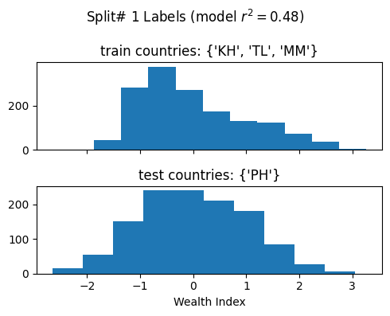
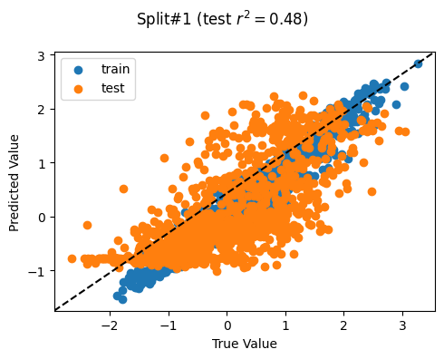
precision recall f1-score support
A 0.61 0.49 0.54 229
B 0.33 0.27 0.30 229
C 0.30 0.30 0.30 243
D 0.34 0.39 0.36 256
E 0.57 0.67 0.62 255
micro avg 0.43 0.43 0.43 1212
macro avg 0.43 0.42 0.42 1212
weighted avg 0.43 0.43 0.42 1212
precision recall f1-score support
AB 0.79 0.64 0.71 458
C 0.30 0.30 0.30 243
DE 0.69 0.82 0.75 511
micro avg 0.64 0.64 0.64 1212
macro avg 0.59 0.58 0.58 1212
weighted avg 0.65 0.64 0.64 1212
Split# 2
Train countries (num samples): {'TL', 'PH', 'MM'} (2109)
Test countries (num samples): {'KH'} (611)
Split r^2: 0.5834437437650173
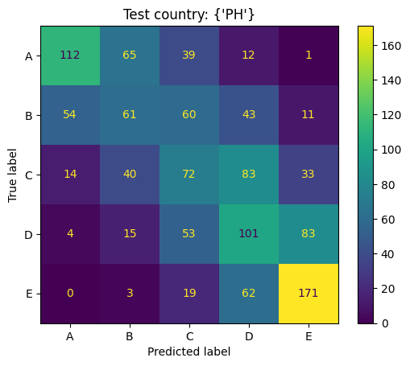
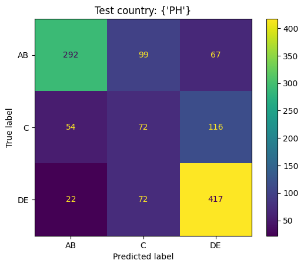
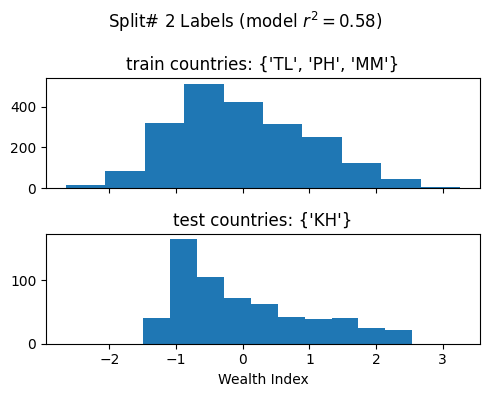
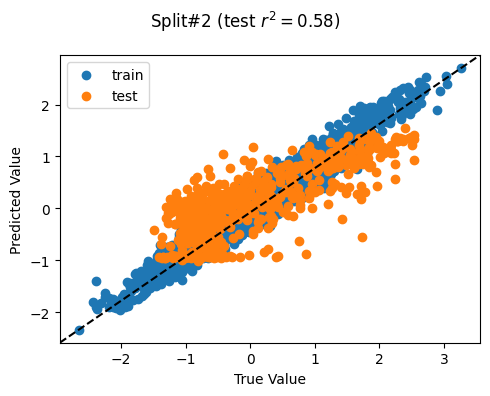
precision recall f1-score support
A 0.61 0.85 0.71 98
B 0.24 0.34 0.28 98
C 0.33 0.34 0.33 122
D 0.41 0.31 0.35 146
E 0.58 0.43 0.50 146
micro avg 0.43 0.43 0.43 610
macro avg 0.44 0.45 0.44 610
weighted avg 0.44 0.43 0.43 610
precision recall f1-score support
AB 0.63 0.87 0.73 196
C 0.33 0.34 0.33 122
DE 0.82 0.61 0.70 292
micro avg 0.64 0.64 0.64 610
macro avg 0.60 0.61 0.59 610
weighted avg 0.66 0.64 0.64 610
Split# 3
Train countries (num samples): {'KH', 'PH', 'MM'} (2265)
Test countries (num samples): {'TL'} (455)
Split r^2: 0.5350537480791098
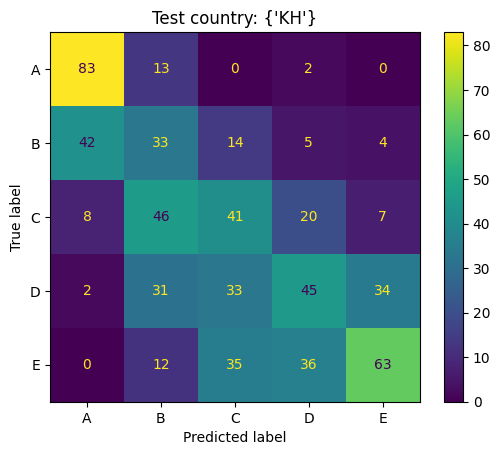
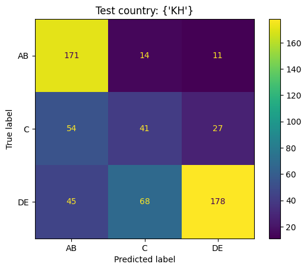
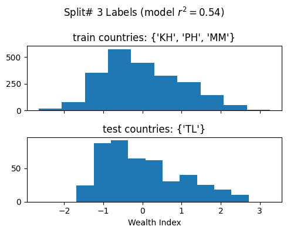
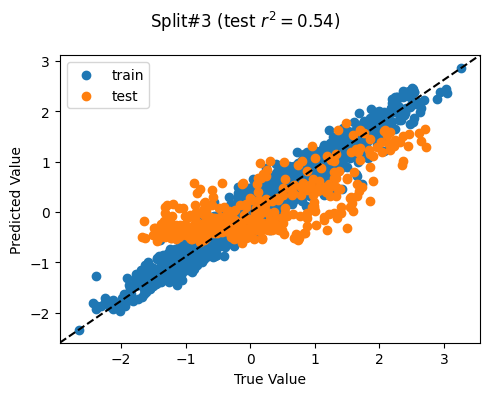
precision recall f1-score support
A 0.77 0.60 0.68 78
B 0.41 0.32 0.36 78
C 0.28 0.29 0.28 91
D 0.35 0.40 0.38 104
E 0.39 0.46 0.42 103
micro avg 0.41 0.41 0.41 454
macro avg 0.44 0.41 0.42 454
weighted avg 0.43 0.41 0.42 454
precision recall f1-score support
AB 0.82 0.64 0.72 156
C 0.28 0.29 0.28 91
DE 0.68 0.78 0.72 207
micro avg 0.63 0.63 0.63 454
macro avg 0.59 0.57 0.58 454
weighted avg 0.65 0.63 0.63 454
Split# 4
Train countries (num samples): {'KH', 'TL', 'PH'} (2279)
Test countries (num samples): {'MM'} (441)
Split r^2: 0.5055486937348812
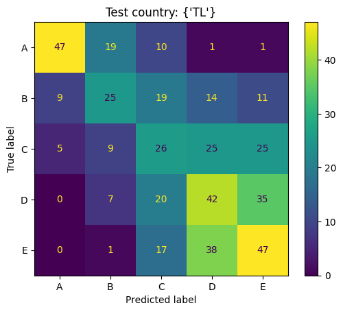
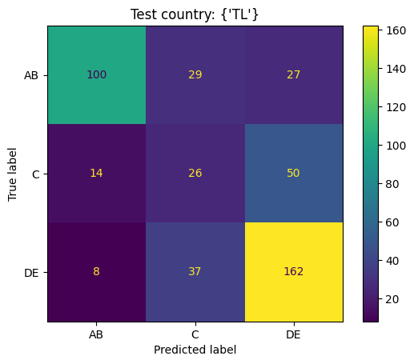
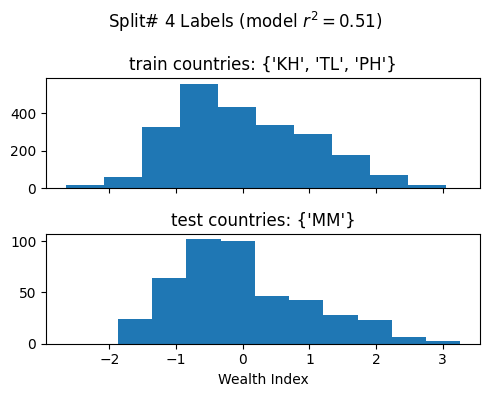
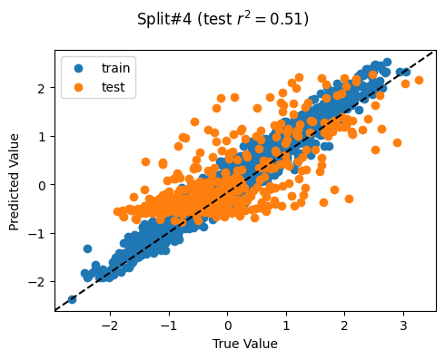
precision recall f1-score support
A 0.70 0.62 0.66 72
B 0.38 0.33 0.35 72
C 0.28 0.28 0.28 89
D 0.29 0.31 0.30 104
E 0.44 0.48 0.46 103
micro avg 0.40 0.40 0.40 440
macro avg 0.42 0.40 0.41 440
weighted avg 0.40 0.40 0.40 440
precision recall f1-score support
AB 0.77 0.69 0.73 144
C 0.28 0.28 0.28 89
DE 0.68 0.73 0.71 207
micro avg 0.63 0.63 0.63 440
macro avg 0.58 0.57 0.57 440
weighted avg 0.63 0.63 0.63 440
Mean split r^2 (std): 0.5261 (0.0383)
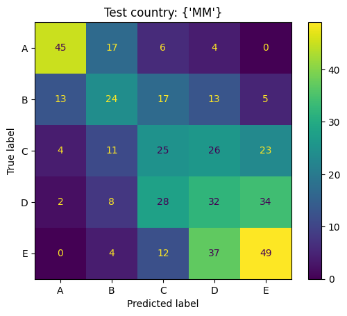
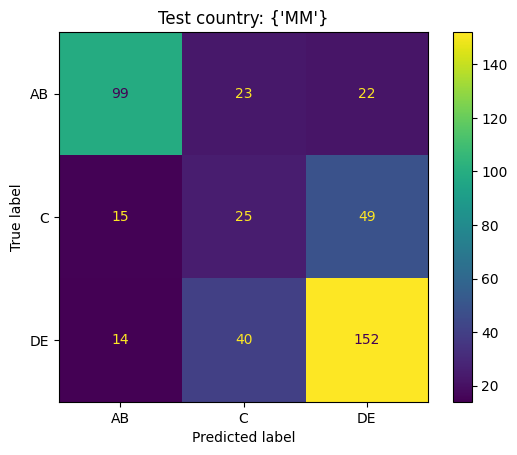
Model Explanability
We gauge a feature’s importance to the predictions via SHAP